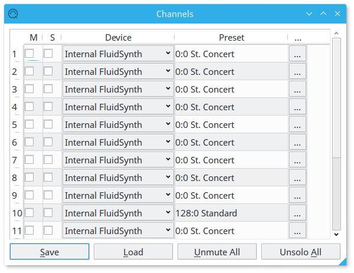

Channel Dialog
Columns in the channel table
- M(Mute): Tick this to mute the corresponding channel.
- S(Solo): Tick this to solo the corresponding channel.
- Device: The player sends midi messages from this channel to the device selected here.
- Preset: Displays the current preset of the corresponding channel.
Preset can be changed by double clicking the cells from this column. - ...: Brings up the channel parameter editor dialog.
Buttons
- Save/Load: not yet implemented.
- Unmute All: Remove tick mark from all mute checkboxes.
- Unsolo All: Remove tick mark from all solo checkboxes.
Return